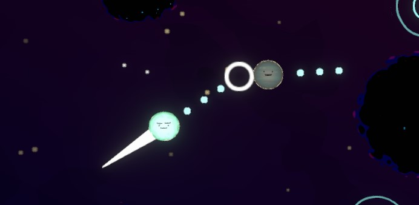
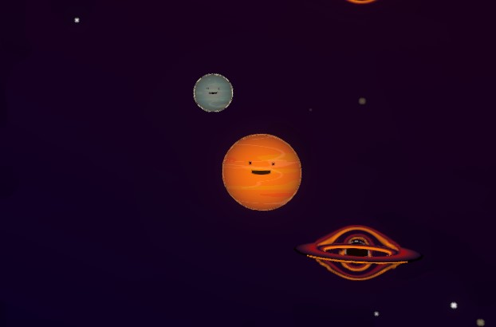
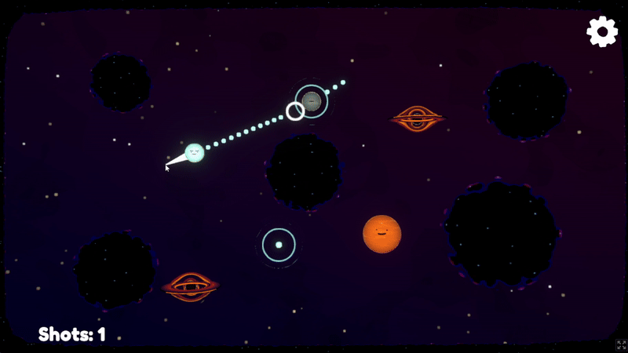
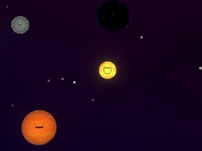
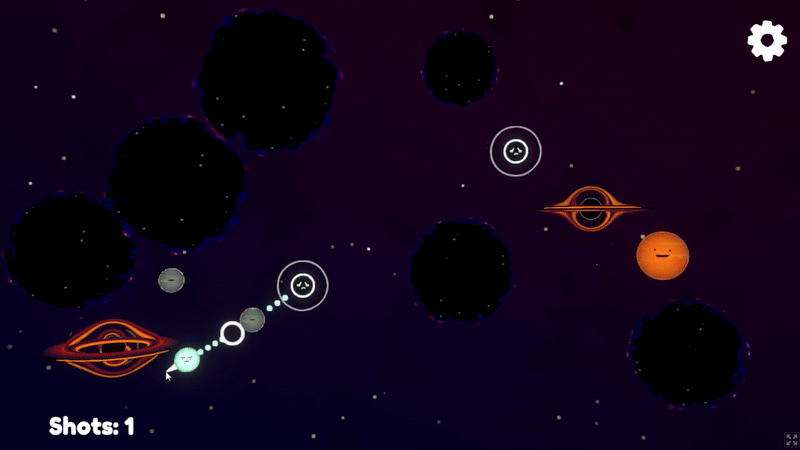
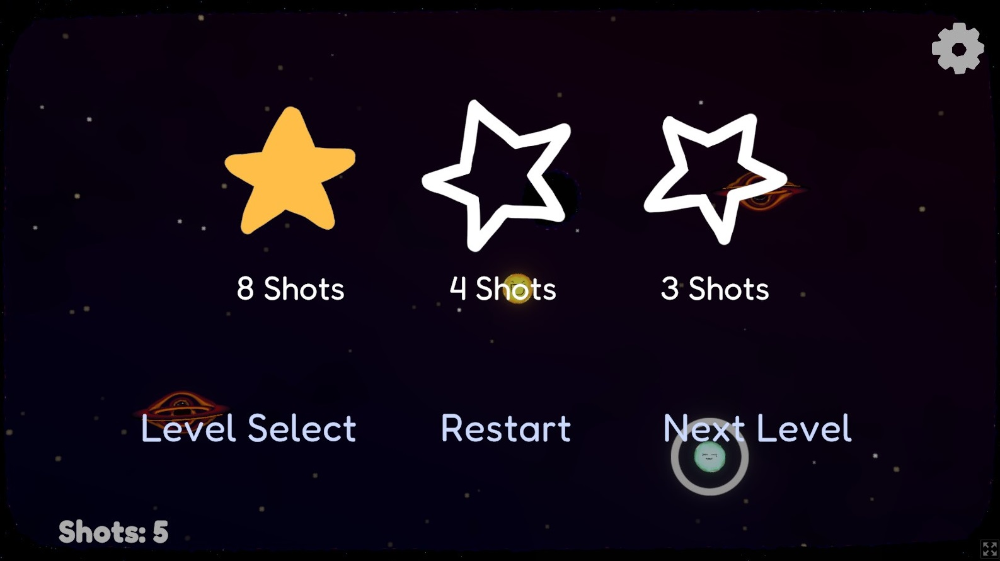
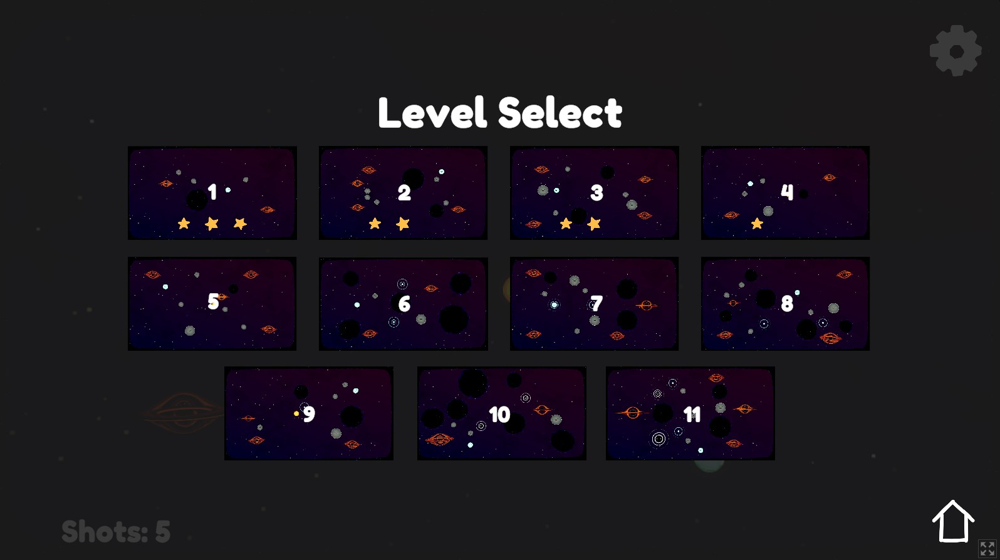
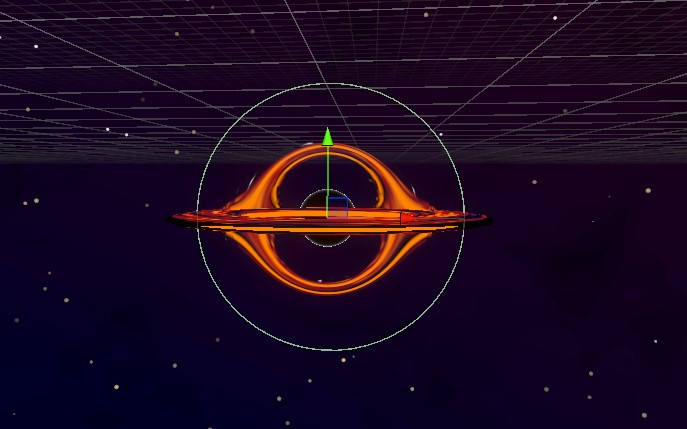
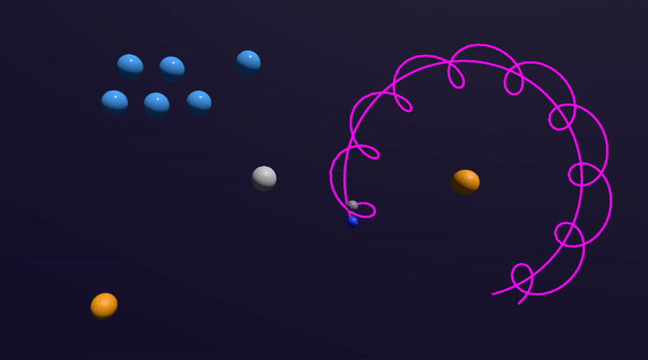
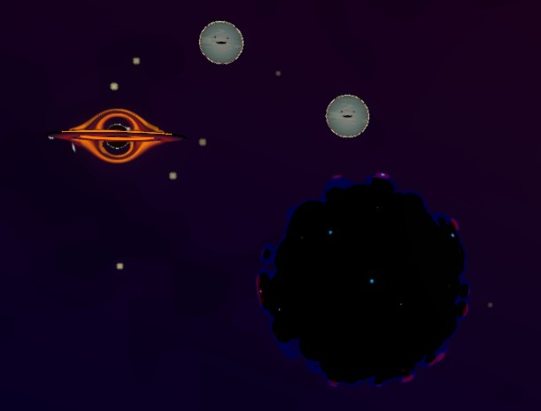

Andrew Knowles
Discrete Math and Game Design @ CMU
Discrete Math and Game Design @ CMU
Space-themed pool table puzzle game built in 96 hours for GMTK Jam 2024.
Made in Unity with 6 friends. I programmed physics for orbital bodies, wormholes, and other space stuff.
No awards, but the game is very polished and feels extremely satisfying to play.
The theme for GMTK Jam 2024 was "Built to Scale." My friends and I threw around a few ideas and were torn between a balance-oriented card battler (balancing a scale), and space-themed pool table puzzles (really large scale objects). While I think the first idea would be more original and fitting for the theme, we ended up choosing the latter as it was a better fit for our team's strengths.
Though not the most original idea, the game was incredibly solid for such a short timeframe. Of over 7500 entries, the game was ranked at #2013 in creativity, while it hit #432, #490, and #649 in style, enjoyment, and overall respectively. Comments praised the polish of sound effects and animations.

Our game uses pool-table mechanics in 11 custom levels intended to be cleared in as few shots as possible.
Players can click on the blue planet (the cue ball) and drag the mouse to aim, releasing to launch in the direction of other planets with the goal of knocking them into black holes.
The number and placement of planets and black holes varies from level to level, while other mechanics are slowly introduced in the form of other celestial bodies.
In early levels, planets of different sizes and masses are introduced, requiring additional force to be moved.
Neutron stars act as a holding point for planets, catching them with strong localized gravity and keeping them still.
Regular stars keep obstacles in orbit, which can interfere with shots.
Wormholes act as portals between points in the level for planets or the cue ball, maintaining velocity and allowing for some skill shots.
Each level has a set goal for number of shots to earn 1, 2, or 3 stars. Levels can be replayed easily using the level select menu, which allows for grinding for 3 stars, an extremely difficult but addicting process as most 3-star solutions require highly specific lineups.
 Besides scripting face animations (made by my friend Andy) to make planets react to being knocked around, I worked on the game's physics-based mechanics, giving some objects local gravity fields to attract others.
Gravity between bodies is calculated using the law of universal gravitation (F = G*m_1m_2/r^2), although the value of the constant was chosen arbitrarily to make the game feel good.
Each orbital body can be marked as attracting, or being attracted to, certain other kinds of bodies filtered by physics layers. Attractors have a manually-placed gravity field (a CircleCollider2D), which allows them to only apply gravity to objects within a reasonable range.
Gravity and orbits were pretty fun to work on. With the right masses and initial velocites, I could even get lunar orbits to work around planets, but I found that slight adjustments could lead to unstable behavior (especially when such an orbit is disrupted by the cue ball).
We found that in general, realistic orbits were hard to fit into gameplay since the player's actions require so much unrealistic behavior (friction in space, for example). Completely toggling friction when needed was an option, as was manually correcting ball velocity when entering orbits, but we decided against that kind of scripted movement for now as we were already more interested in making levels with our other mechanics.
Most players seemed really happy with the game, though one complaint I heard that I agree with involves the purple "dark matter" objects which act as immovable barriers. Our team decided to use this material for such objects since it was already being used for the outer walls of the levels, which similarly act as fixed objects (and look quite nice).
For objects within the interior of levels, though, I think the material blends a bit too much with the background, while the soft and flowy edges slightly obscure the hitboxes and can create confusion.
I also would have liked more gameplay with orbits, especially involving knocking balls themselves into and out of orbits. As discovered, this would certainly require some manual velocity correction to be at all playable, but I think it would have really made our game stick out even more.